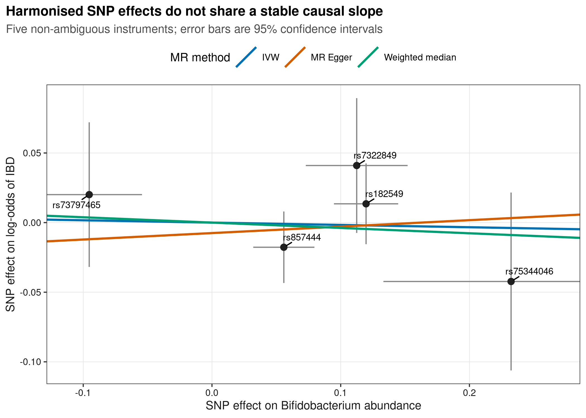
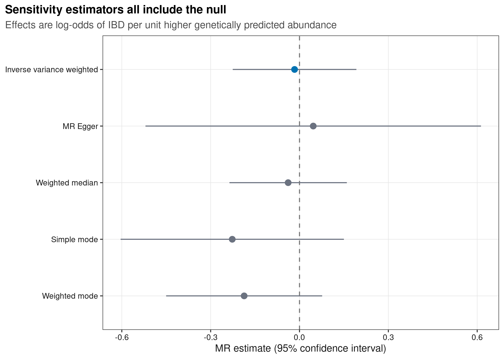
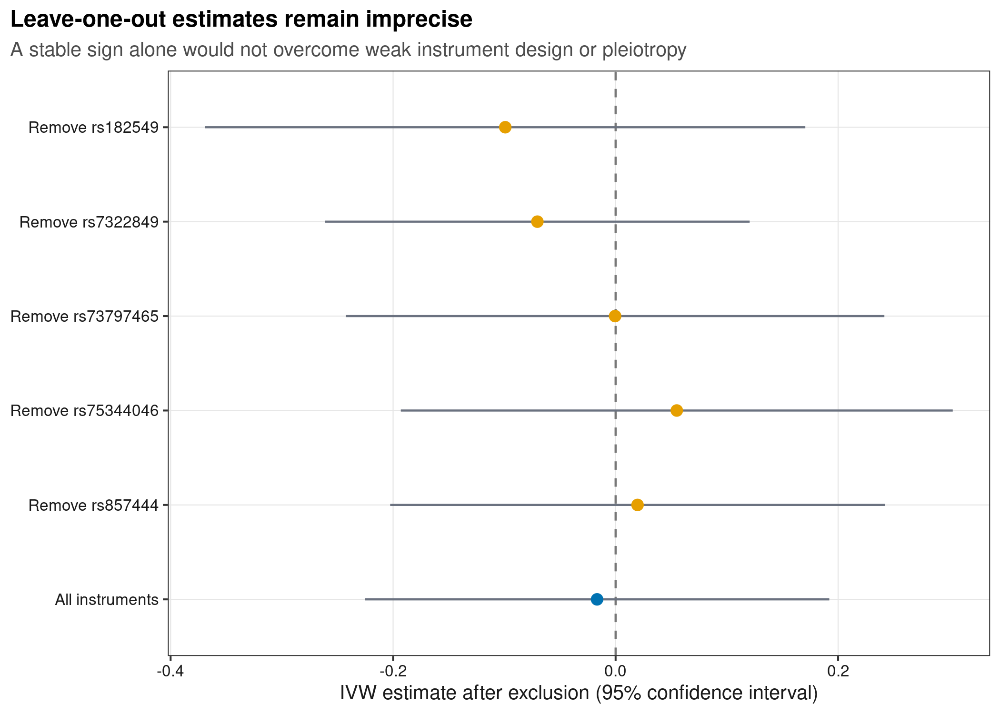
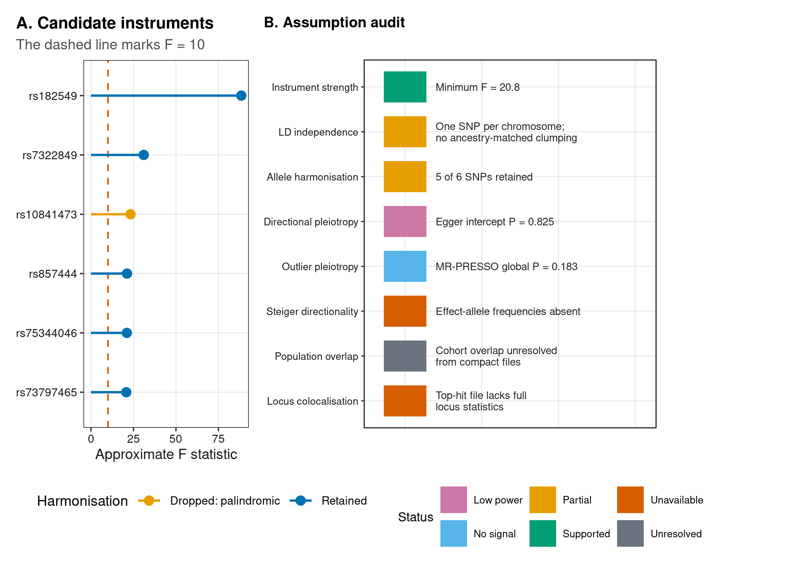

options(timeout = 600)
data_url <- "https://raw.githubusercontent.com/petemeng/microbiome-best-practices/3cb6a817e0c73ab7ecbec1cedc1ad80cbb9ecfaa/"
input_files <- c(
"data/small/mr-mibiogen/exposure.tsv",
"data/small/mr-mibiogen/outcome.tsv",
"data/small/mr-mibiogen/selection-ledger.tsv",
"data/small/mr-mibiogen/source-summary.json"
)
for (path in input_files) {
dir.create(dirname(path), recursive = TRUE, showWarnings = FALSE)
if (!file.exists(path)) download.file(paste0(data_url, path), path, mode = "wb", quiet = TRUE)
}孟德尔随机化：工具变量、水平多效性与敏感性分析
额外数据：MR 不能从
otutab/taxonomy/metadata直接计算；必须另有暴露 GWAS 与结局 GWAS 的逐 SNP 汇总统计，至少包括 effect/other allele、beta、SE、P 值，最好还有 effect-allele frequency 与完整位点统计。
MR 的可信度由工具变量假设决定
微生物组 MR 论文通常包含：SNP 暴露效应–结局效应散点图、多个 MR 估计器的森林图、leave-one-out 图，以及异质性/多效性诊断。它们试图回答：
携带使某个微生物性状长期偏高的遗传变异者，结局风险是否也沿一致方向改变？这种关系能否用水平多效性、反向因果或共享关联位点解释？
本例的暴露来自 MiBioGen 联盟 24 个队列的菌群 GWAS，选取 genus.Bifidobacterium.id.436；结局来自 de Lange 等人的 IBD GWAS（GCST004131，25,042 病例、34,915 对照）。MiBioGen 论文、IBD GWAS 论文、MiBioGen 官方汇总文件和NHGRI-EBI GWAS Catalog提供来源。
为了让单篇可运行，这里冻结 MiBioGen P < 5×10^-6、且在结局 API 中可取到的 6 个跨染色体候选位点。一条染色体取一个 SNP 只能保证它们不在同一染色体，并不替代与暴露祖源匹配的 LD clumping。 因此这是用于演示全流程的审计型分析，不是可直接投稿的最终工具集。
重要MR 不是“有遗传数据就自动因果”
MR 的因果解释依赖三个不可由一次回归完全验证的假设：工具与暴露相关；工具不受暴露–结局混杂影响；工具只经暴露影响结局。菌群 GWAS 的弱工具、祖源差异、菌定义不一致、水平多效性和宿主位点共享尤其容易破坏这些条件。
多种估计器方向一致，为什么还不够？
IVW、加权中位数与 MR-Egger 使用同一组候选位点，可能共享弱工具、祖源差异和选择偏差；方向相同不是三次独立验证。只有少数 SNP 时，异质性或 Egger 截距检验的低功效尤其明显，P > 0.05 不能当作没有水平多效性的证明。单个宿主位点还可能通过饮食或免疫等路径同时影响微生物与结局。
本例按较宽松阈值选择六个位点，近似 F 值来自用于选择工具的暴露结果，可能受到选择效应影响。迁移到正式研究时，需要明确祖源、样本重叠、等位基因协调和工具独立性，并在适用情况下用独立暴露估计、弱工具稳健分析或共定位证据检查结论。遗传代理描述的是特定尺度的长期暴露倾向，不等于短期补充某菌的干预效果。
下载并读取本次分析的数据
需要 R，以及 MRPRESSO、TwoSampleMR、ggplot2、ggrepel、patchwork、ragg、svglite。本次使用筛选后的 MiBioGen 暴露、结局 GWAS 汇总统计和变异筛选记录；MR 的输入不是 16S 三件套。
在一个新建的文件夹中运行以下代码，下载文件后按文中的顺序继续分析：
.libPaths(c(".r-lib", .libPaths()))
library(TwoSampleMR)
library(MRPRESSO)
library(ggplot2)
library(ggrepel)
library(patchwork)
set.seed(20260754)
font_pub <- "sans"
pal_pub <- c(
blue = "#0072B2", orange = "#E69F00", green = "#009E73",
vermillion = "#D55E00", purple = "#CC79A7", sky = "#56B4E9",
yellow = "#F0E442", grey = "#6B7280"
)
scale_color_pub <- function(..., values = unname(pal_pub)) {
ggplot2::scale_color_manual(..., values = values)
}
scale_fill_pub <- function(..., values = unname(pal_pub)) {
ggplot2::scale_fill_manual(..., values = values)
}
theme_pub <- function(base_size = 10, base_family = font_pub) {
ggplot2::theme_bw(base_size = base_size, base_family = base_family) +
ggplot2::theme(
panel.grid.minor = ggplot2::element_blank(),
panel.grid.major = ggplot2::element_line(colour = "#E6E6E6", linewidth = 0.25),
axis.text = ggplot2::element_text(colour = "#1A1A1A"),
axis.title = ggplot2::element_text(colour = "#1A1A1A"),
plot.title.position = "plot",
plot.title = ggplot2::element_text(face = "bold", size = ggplot2::rel(1.15)),
plot.subtitle = ggplot2::element_text(colour = "#4D4D4D"),
legend.position = "top", legend.key = ggplot2::element_blank()
)
}
save_pub <- function(plot, file_base, width = 180, height = 115,
units = "mm", dpi = 600) {
dir.create(dirname(file_base), recursive = TRUE, showWarnings = FALSE)
ggplot2::ggsave(paste0(file_base, ".pdf"), plot, width = width,
height = height, units = units,
device = grDevices::cairo_pdf, family = font_pub, bg = "white")
ggplot2::ggsave(paste0(file_base, ".svg"), plot, width = width,
height = height, units = units, device = svglite::svglite,
bg = "white")
ggplot2::ggsave(paste0(file_base, ".png"), plot, width = width,
height = height, units = units, dpi = dpi,
device = ragg::agg_png, bg = "white")
ggplot2::ggsave(paste0(file_base, ".tiff"), plot, width = width,
height = height, units = units, dpi = dpi,
device = ragg::agg_tiff, compression = "lzw", bg = "white")
invisible(plot)
}读取并审计暴露/结局汇总统计
base <- "data/small/mr-mibiogen"
exposure <- read.delim(
file.path(base, "exposure.tsv"), check.names = FALSE, stringsAsFactors = FALSE
)
outcome <- read.delim(
file.path(base, "outcome.tsv"), check.names = FALSE, stringsAsFactors = FALSE
)
stopifnot(
nrow(exposure) == 6,
identical(exposure$SNP, outcome$SNP),
length(unique(exposure$chr.exposure)) == nrow(exposure),
all(exposure$FStatistic > 10)
)
exposure
outcome SNP exposure id.exposure
1 rs182549 Bifidobacterium genus abundance genus.Bifidobacterium.id.436
2 rs73797465 Bifidobacterium genus abundance genus.Bifidobacterium.id.436
3 rs857444 Bifidobacterium genus abundance genus.Bifidobacterium.id.436
4 rs10841473 Bifidobacterium genus abundance genus.Bifidobacterium.id.436
5 rs7322849 Bifidobacterium genus abundance genus.Bifidobacterium.id.436
6 rs75344046 Bifidobacterium genus abundance genus.Bifidobacterium.id.436
chr.exposure pos.exposure effect_allele.exposure other_allele.exposure
1 2 136616754 C T
2 5 142793467 T G
3 6 14617591 C T
4 12 20378911 G C
5 13 112859829 T C
6 21 31861790 C T
beta.exposure se.exposure pval.exposure eaf.exposure samplesize.exposure
1 0.11970350 0.01272937 1.278216e-20 NA 14778
2 -0.09535663 0.02092365 4.381619e-06 NA 14666
3 0.05582344 0.01212192 3.570966e-06 NA 14777
4 -0.06242065 0.01294385 1.645220e-06 NA 14777
5 0.11242845 0.02018126 1.083679e-08 NA 14778
6 0.23235409 0.05059787 4.863541e-06 NA 3856
ncohorts.exposure FStatistic
1 24 88.42999
2 23 20.76954
3 24 21.20753
4 24 23.25572
5 24 31.03529
6 6 21.08804
SNP outcome id.outcome chr.outcome pos.outcome
1 rs182549 Inflammatory bowel disease GCST004131 2 135859184
2 rs73797465 Inflammatory bowel disease GCST004131 5 143413902
3 rs857444 Inflammatory bowel disease GCST004131 6 14617360
4 rs10841473 Inflammatory bowel disease GCST004131 12 20225977
5 rs7322849 Inflammatory bowel disease GCST004131 13 112205515
6 rs75344046 Inflammatory bowel disease GCST004131 21 30489472
effect_allele.outcome other_allele.outcome beta.outcome se.outcome
1 T C -0.0135 0.0148
2 T G 0.0201 0.0265
3 C T -0.0177 0.0131
4 G C -0.0074 0.0144
5 T C 0.0410 0.0247
6 C T -0.0423 0.0326
pval.outcome samplesize.outcome ncase.outcome ncontrol.outcome eaf.outcome
1 0.36080 59957 25042 34915 NA
2 0.44890 59957 25042 34915 NA
3 0.17700 59957 25042 34915 NA
4 0.60560 59957 25042 34915 NA
5 0.09639 59957 25042 34915 NA
6 0.19440 59957 25042 34915 NA候选工具的最小近似 F = 20.77，但最弱位点仍只达到暴露 GWAS 的 suggestive threshold，而非传统 genome-wide significance。菌群性状遗传解释度较低时，F 筛查不能替代弱工具稳健分析。
下载完整 R 脚本。脚本包含数据下载、计算和图形导出。
首次使用时安装 R 包
install.packages(c(
"remotes", "jsonlite", "digest", "ggplot2", "ggrepel", "patchwork",
"scales", "svglite", "ragg"
))
remotes::install_github("MRCIEU/TwoSampleMR@v0.6.6")
remotes::install_github("rondolab/MR-PRESSO")孟德尔随机化依赖哪三项工具变量假设
对工具 SNP (G_j)、微生物暴露 (X) 和结局 (Y)，Wald ratio 为：
\[ \hat\beta_{MR,j}=\frac{\hat\beta_{Y G,j}}{\hat\beta_{X G,j}}. \]
IVW（inverse-variance weighted）将多个 ratio 按精度合并。它依赖：
- Relevance（相关性）：\(G\) 能预测 \(X\)。常用近似 \(F=(\beta_X/SE_X)^2\)，但 F > 10 只是经验筛查，不是强工具保证。
- Independence（独立性）：\(G\) 与 \(X-Y\) 混杂因素独立；人群分层、家系结构和择偶可破坏它。
- Exclusion restriction（排除限制）：\(G\) 不经 \(X\) 之外的路径影响 \(Y\)。这正是水平多效性的核心风险。
深入：不同敏感性估计器保护什么
- IVW：在所有工具有效，或无方向性多效性时效率高；异质性提示 ratio 不一致。
- MR-Egger：截距检验平均方向性多效性，斜率在 InSIDE 假设下可较稳健，但工具少时功效极低且易受弱工具影响。
- Weighted median：当至少一半权重来自有效工具时可一致。
- Mode estimators：假设最大的一簇相似 ratio 来自有效工具，通常区间较宽。
- MR-PRESSO：寻找异常多效性工具并比较校正前后结果；没有检测到 outlier 不等于没有多效性。
所有方法都可能在共同假设同时失败时一致地给出错误答案。敏感性分析的价值是压力测试，不是“多数投票即真”。
微生物 MR 的专属审计
- 暴露 GWAS 中的“属”可能由不同 16S 区域、分类库、相对丰度变换和 cohort-specific prevalence 定义；
- 暴露 beta 的一单位到底代表标准化丰度、presence/absence 还是秩正态值，决定效应量如何解释；
- 两个 GWAS 的祖源、样本重叠和协变量策略影响偏倚；
- 同一宿主位点同时关联菌和 IBD，不代表由菌介导；需要 locus colocalisation 区分共享因果变异与 LD 中的两个信号。
对齐变异，再检查工具强度和多效性
等位基因 harmonisation
同一个 SNP 在两份 GWAS 中可能以相反 effect allele 报告。harmonise_data(action = 2) 对齐方向，并在缺少 allele frequency 时删除不能可靠判向的 palindromic SNP。
harmonised <- TwoSampleMR::harmonise_data(exposure, outcome, action = 2)
harmonisation_ledger <- harmonised[, c(
"SNP", "effect_allele.exposure", "other_allele.exposure",
"effect_allele.outcome", "other_allele.outcome",
"beta.exposure", "beta.outcome", "palindromic", "ambiguous",
"mr_keep", "remove", "action"
)]
harmonisation_ledger
analysis_data <- harmonised[harmonised$mr_keep, , drop = FALSE]
stopifnot(nrow(analysis_data) == 5) SNP effect_allele.exposure other_allele.exposure effect_allele.outcome
1 rs10841473 G C G
2 rs182549 C T C
3 rs7322849 T C T
4 rs73797465 T G T
5 rs75344046 C T C
6 rs857444 C T C
other_allele.outcome beta.exposure beta.outcome palindromic ambiguous mr_keep
1 C -0.06242065 -0.0074 TRUE TRUE FALSE
2 T 0.11970350 0.0135 FALSE FALSE TRUE
3 C 0.11242845 0.0410 FALSE FALSE TRUE
4 G -0.09535663 0.0201 FALSE FALSE TRUE
5 T 0.23235409 -0.0423 FALSE FALSE TRUE
6 T 0.05582344 -0.0177 FALSE FALSE TRUE
remove action
1 FALSE 2
2 FALSE 2
3 FALSE 2
4 FALSE 2
5 FALSE 2
6 FALSE 2rs10841473 是 C/G palindromic SNP，且两份紧凑表没有 effect-allele frequency，无法判断 strand，因而删除。不能为了增加工具数而强行保留。
主估计与稳健估计器
methods <- c(
"mr_ivw", "mr_egger_regression", "mr_weighted_median",
"mr_simple_mode", "mr_weighted_mode"
)
set.seed(20260754)
mr_results <- TwoSampleMR::mr(analysis_data, method_list = methods)
mr_results$Lower <- mr_results$b - qnorm(0.975) * mr_results$se
mr_results$Upper <- mr_results$b + qnorm(0.975) * mr_results$se
mr_results$OR <- exp(mr_results$b)
mr_results$ORLower <- exp(mr_results$Lower)
mr_results$ORUpper <- exp(mr_results$Upper)
mr_results[, c("method", "nsnp", "b", "se", "pval", "Lower", "Upper", "OR")] method nsnp b se pval Lower
1 Inverse variance weighted 5 -0.01667419 0.1065087 0.8755976 -0.2254274
2 MR Egger 5 0.04637394 0.2890186 0.8827197 -0.5200922
3 Weighted median 5 -0.03834782 0.1011232 0.7045254 -0.2365457
4 Simple mode 5 -0.22709201 0.1923468 0.3031557 -0.6040848
5 Weighted mode 5 -0.18694887 0.1343972 0.2365998 -0.4503626
Upper OR
1 0.19207898 0.9834641
2 0.61284007 1.0474660
3 0.15985003 0.9623781
4 0.14990075 0.7968475
5 0.07646485 0.8294861IVW 估计为 −0.0167（SE = 0.1065，P = 0.876），对应 OR = 0.984（95% CI 0.798–1.212）。MR-Egger、weighted median 和两种 mode 的区间也均包含零。这里的“每单位更高 abundance”沿用 MiBioGen 暴露标度，不能写成“每增加 1% 相对丰度”。
散点图：每个 SNP 的方向与方法斜率
ivw <- mr_results[mr_results$method == "Inverse variance weighted", ]
egger <- mr_results[mr_results$method == "MR Egger", ]
median <- mr_results[mr_results$method == "Weighted median", ]
egger_intercept <- TwoSampleMR::mr_pleiotropy_test(analysis_data)
line_data <- data.frame(
Method = c("IVW", "MR Egger", "Weighted median"),
Intercept = c(0, egger_intercept$egger_intercept, 0),
Slope = c(ivw$b, egger$b, median$b)
)
method_colours <- c(
IVW = pal_pub[["blue"]],
`MR Egger` = pal_pub[["vermillion"]],
`Weighted median` = pal_pub[["green"]]
)
p_scatter <- ggplot(
analysis_data, aes(beta.exposure, beta.outcome, label = SNP)
) +
geom_errorbar(
aes(ymin = beta.outcome - 1.96 * se.outcome,
ymax = beta.outcome + 1.96 * se.outcome),
width = 0, colour = "#888888"
) +
geom_errorbarh(
aes(xmin = beta.exposure - 1.96 * se.exposure,
xmax = beta.exposure + 1.96 * se.exposure),
height = 0, colour = "#888888"
) +
geom_point(size = 2.3, colour = "#202020") +
ggrepel::geom_text_repel(
seed = 20260754, size = 2.8, max.overlaps = Inf,
min.segment.length = 0, box.padding = 0.35, point.padding = 0.25
) +
geom_abline(
data = line_data,
aes(intercept = Intercept, slope = Slope, colour = Method), linewidth = 0.9
) +
scale_colour_manual(values = method_colours) +
coord_cartesian(xlim = range(analysis_data$beta.exposure) * 1.15) +
labs(
title = "Harmonised SNP effects do not share a stable causal slope",
subtitle = "Five non-ambiguous instruments; error bars are 95% confidence intervals",
x = "SNP effect on Bifidobacterium abundance",
y = "SNP effect on log-odds of IBD", colour = "MR method"
) + theme_pub(10)
p_scatter
save_pub(p_scatter, "figures/54-mendelian-randomization/54-1-harmonised-scatter",
height = 120)森林图：不要只报告 IVW
mr_results$method <- factor(
mr_results$method,
levels = rev(c(
"Inverse variance weighted", "MR Egger", "Weighted median",
"Simple mode", "Weighted mode"
))
)
p_methods <- ggplot(mr_results, aes(b, method)) +
geom_vline(xintercept = 0, linetype = 2, colour = "#777777") +
geom_errorbarh(aes(xmin = Lower, xmax = Upper), height = 0,
colour = pal_pub[["grey"]]) +
geom_point(aes(colour = method == "Inverse variance weighted"), size = 2.5) +
scale_colour_manual(values = c(
`FALSE` = pal_pub[["grey"]], `TRUE` = pal_pub[["blue"]]
)) +
labs(
title = "Sensitivity estimators all include the null",
subtitle = "Effects are log-odds of IBD per unit higher genetically predicted abundance",
x = "MR estimate (95% confidence interval)", y = NULL
) + theme_pub(10) + theme(legend.position = "none")
p_methods
save_pub(p_methods, "figures/54-mendelian-randomization/54-2-method-forest",
height = 110)工具强度、多效性与共定位
异质性、Egger 截距与 MR-PRESSO
heterogeneity <- TwoSampleMR::mr_heterogeneity(analysis_data)
egger_intercept <- TwoSampleMR::mr_pleiotropy_test(analysis_data)
heterogeneity
egger_intercept
set.seed(20260754)
presso <- MRPRESSO::mr_presso(
BetaOutcome = "beta.outcome", BetaExposure = "beta.exposure",
SdOutcome = "se.outcome", SdExposure = "se.exposure",
OUTLIERtest = TRUE, DISTORTIONtest = TRUE,
data = analysis_data, NbDistribution = 2000, SignifThreshold = 0.05
)
presso[["Main MR results"]]
presso[["MR-PRESSO results"]][["Global Test"]] id.exposure id.outcome outcome
1 genus.Bifidobacterium.id.436 GCST004131 Inflammatory bowel disease
2 genus.Bifidobacterium.id.436 GCST004131 Inflammatory bowel disease
exposure method Q Q_df
1 Bifidobacterium genus abundance MR Egger 7.480877 3
2 Bifidobacterium genus abundance Inverse variance weighted 7.625177 4
Q_pval
1 0.05805185
2 0.10631453
id.exposure id.outcome outcome
1 genus.Bifidobacterium.id.436 GCST004131 Inflammatory bowel disease
exposure egger_intercept se pval
1 Bifidobacterium genus abundance -0.007511445 0.03122526 0.8254008
Exposure MR Analysis Causal Estimate Sd T-stat
1 beta.exposure Raw -0.01667419 0.1065087 -0.1565524
2 beta.exposure Outlier-corrected NA NA NA
P-value
1 0.8831814
2 NA
$RSSobs
[1] 12.34602
$Pvalue
[1] 0.183IVW Cochran’s Q P = 0.106，Egger intercept = −0.0075（P = 0.825），MR-PRESSO global P = 0.183，未检测到 outlier。只有 5 个工具时这些检验功效很低，因此结果应写作“未发现多效性信号”，而不是“证明不存在多效性”。
Leave-one-out 只能发现单点主导
leave_one_out <- TwoSampleMR::mr_leaveoneout(analysis_data)
leave_one_out$Lower <- leave_one_out$b - qnorm(0.975) * leave_one_out$se
leave_one_out$Upper <- leave_one_out$b + qnorm(0.975) * leave_one_out$se
leave_one_out$Label <- ifelse(
leave_one_out$SNP == "All", "All instruments", paste("Remove", leave_one_out$SNP)
)
leave_one_out$Label <- factor(leave_one_out$Label, levels = rev(leave_one_out$Label))
p_loo <- ggplot(leave_one_out, aes(b, Label)) +
geom_vline(xintercept = 0, linetype = 2, colour = "#777777") +
geom_errorbarh(aes(xmin = Lower, xmax = Upper), height = 0,
colour = pal_pub[["grey"]]) +
geom_point(aes(colour = SNP == "All"), size = 2.3) +
scale_colour_manual(values = c(
`FALSE` = pal_pub[["orange"]], `TRUE` = pal_pub[["blue"]]
)) +
labs(
title = "Leave-one-out estimates remain imprecise",
subtitle = "A stable sign alone would not overcome weak instrument design or pleiotropy",
x = "IVW estimate after exclusion (95% confidence interval)", y = NULL
) + theme_pub(10) + theme(legend.position = "none")
p_loo
save_pub(p_loo, "figures/54-mendelian-randomization/54-3-leave-one-out",
height = 110)把无法完成的诊断也写进结果
presso_global_p <- presso[["MR-PRESSO results"]][["Global Test"]]$Pvalue
assumption_audit <- data.frame(
Assumption = c(
"Instrument strength", "LD independence", "Allele harmonisation",
"Directional pleiotropy", "Outlier pleiotropy", "Steiger directionality",
"Population overlap", "Locus colocalisation"
),
Status = c(
"Supported", "Partial", "Partial", "Low power",
"No signal", "Unavailable", "Unresolved", "Unavailable"
),
Evidence = c(
sprintf("Minimum F = %.1f", min(exposure$FStatistic)),
"One SNP per chromosome;\nno ancestry-matched clumping",
sprintf("%d of %d SNPs retained", nrow(analysis_data), nrow(harmonised)),
sprintf("Egger intercept P = %.3f", egger_intercept$pval),
sprintf("MR-PRESSO global P = %.3f", presso_global_p),
"Effect-allele frequencies absent",
"Cohort overlap unresolved\nfrom compact files",
"Top-hit file lacks full\nlocus statistics"
)
)
strength <- merge(
exposure[, c("SNP", "FStatistic")],
harmonisation_ledger[, c("SNP", "mr_keep")],
by = "SNP", all.x = TRUE, sort = FALSE
)
strength$Status <- ifelse(strength$mr_keep, "Retained", "Dropped: palindromic")
p_strength <- ggplot(strength, aes(FStatistic, reorder(SNP, FStatistic), colour = Status)) +
geom_vline(xintercept = 10, linetype = 2, colour = pal_pub[["vermillion"]]) +
geom_segment(aes(x = 0, xend = FStatistic, yend = reorder(SNP, FStatistic)),
linewidth = 0.7) +
geom_point(size = 2.4) +
scale_colour_manual(values = c(
Retained = pal_pub[["blue"]],
`Dropped: palindromic` = pal_pub[["orange"]]
)) +
labs(
title = "A. Candidate instruments", subtitle = "The dashed line marks F = 10",
x = "Approximate F statistic", y = NULL, colour = "Harmonisation"
) + theme_pub(9)
assumption_audit$Assumption <- factor(
assumption_audit$Assumption, levels = rev(assumption_audit$Assumption)
)
status_colours <- c(
Supported = pal_pub[["green"]], Partial = pal_pub[["orange"]],
`No signal` = pal_pub[["sky"]], `Low power` = pal_pub[["purple"]],
Unavailable = pal_pub[["vermillion"]], Unresolved = pal_pub[["grey"]]
)
p_assumptions <- ggplot(assumption_audit, aes(1, Assumption, fill = Status)) +
geom_tile(width = 0.28, height = 0.7, colour = "white") +
geom_text(aes(x = 1.2, label = Evidence), hjust = 0, size = 2.35,
lineheight = 0.9, colour = "#252525") +
scale_fill_manual(values = status_colours) +
coord_cartesian(xlim = c(0.82, 2.55), clip = "off") +
labs(title = "B. Assumption audit", x = NULL, y = NULL, fill = "Status") +
theme_pub(8) +
theme(
axis.text.x = element_blank(), axis.ticks.x = element_blank(),
panel.grid = element_blank(), plot.margin = margin(5, 85, 5, 5)
)
p_audit <- p_strength + p_assumptions +
patchwork::plot_layout(widths = c(0.85, 1.5), guides = "collect") &
theme(legend.position = "bottom")
p_audit
save_pub(p_audit, "figures/54-mendelian-randomization/54-4-assumption-audit",
height = 130)本教学子集没有 effect-allele frequency，不能可靠计算 exposure/outcome explained variance，因此不伪造 Steiger directionality；暴露仅有 top-hit 记录，也无法做位点共定位。样本重叠不能从紧凑文件排除。把这些标成 unavailable/unresolved 比输出一个看似齐全的绿色勾选表更重要。
今天可投稿分析还要升级什么
- 用与暴露 GWAS 祖源匹配的 reference panel 做 LD clumping，并报告阈值、窗口和 panel；
- 获取完整暴露与结局 summary statistics，做 Steiger、双向 MR 和关键位点 colocalisation；
- 报告暴露 GWAS 的统一分类/变换、工具解释度、conditional F 和样本重叠；
- 检查 SNP 与 BMI、饮食、药物、免疫表型等潜在多效性通路；
- 在独立 GWAS、不同 16S 区域或 shotgun taxonomic definition 中复现；
- 若暴露是多个相关菌，考虑 multivariable MR，但先证明工具对各暴露有足够条件强度。
注意常见坑：MR 最危险的“全绿结果”
- 用 P < 1×10^-5 的弱工具，却只写所有 F > 10；
- 把“一染色体一个 SNP”写成已完成 LD clumping；
- palindromic SNP 无 EAF 仍强行对齐；
- Egger/PRESSO P > 0.05 就宣称不存在水平多效性；
- 两份 GWAS 中同名菌属的测量定义不同，却按同一 exposure 解释；
- 没做 colocalisation，就把共享区域写成“菌介导宿主遗传效应”；
- 空结果写成“证明该菌对疾病无因果作用”。宽区间通常只表示数据还不能排除有意义的正负效应。
比较主估计与方向性、稳健性分析
MR 主图建议用“散点 + 方法森林图”，把 leave-one-out 与 assumption audit 放补充材料。森林图必须有零参考线、方法名、SNP 数和 95% CI；二元结局可补充 OR，但不要把暴露标度误写成百分比。
图注应同时说明：候选/保留 SNP 数、harmonisation action、工具选择与 clumping、效应单位、样本量以及哪些诊断不可得。save_pub() 已输出 PDF/SVG 和 600 ppi PNG/TIFF，图中文字全部为英文。
报告遗传工具与MR敏感性分析的方法与限制
We performed two-sample Mendelian randomisation using summary associations for MiBioGen genus-level Bifidobacterium abundance and inflammatory bowel disease (GCST004131; 25,042 cases and 34,915 controls). Candidate instruments were selected at P < 5×10^-6. For this compact teaching analysis, one outcome-available variant per chromosome was retained before harmonisation; this cross-chromosome rule was not considered a substitute for ancestry-matched LD clumping. Effect alleles were harmonised using
TwoSampleMRwith action 2, and one palindromic variant without allele-frequency information was excluded. The inverse-variance weighted estimator was primary; MR-Egger, weighted-median, simple-mode and weighted-mode estimators were sensitivity analyses. Heterogeneity, the MR-Egger intercept, leave-one-out estimates and MR-PRESSO with 2,000 fixed-seed simulations were evaluated. Steiger directionality and locus colocalisation were not estimable because effect-allele frequencies and full locus-level exposure statistics, respectively, were unavailable. Results were therefore treated as a limited teaching analysis rather than definitive causal evidence.
正式论文必须把上述“cross-chromosome rule”替换为真正执行的 clumping 参数，并补充 population、exposure scale、software version、sample overlap、Steiger、bidirectional MR、colocalisation 和数据 accession。
将遗传工具与MR敏感性分析用于自己的研究
你的 16S 三件套只能定义表型和发现问题，不能充当 MR 暴露 GWAS。还需两张独立汇总统计表：
| 字段 | 暴露表 | 结局表 |
|---|---|---|
| 变异 ID | SNP |
SNP |
| 等位基因 | effect_allele.exposure, other_allele.exposure |
对应 .outcome 字段 |
| 效应与标准误 | beta.exposure, se.exposure |
beta.outcome, se.outcome |
| P 值 | pval.exposure |
pval.outcome |
| 推荐补充 | EAF、N、祖源、坐标/build | EAF、病例/对照 N、祖源、坐标/build |
先统一 genome build 与 variant ID，再做 ancestry-matched clumping，最后 harmonise。若菌属 GWAS 与你的 16S 研究在分类层级、扩增区域和变换上不一致，只能把 MR 当作外部三角验证，不能声称它直接验证了你队列中的具体 ASV。
参考
- Kurilshikov A, et al. Large-scale association analyses identify host factors influencing human gut microbiome composition. Nature Genetics. 2021;53:156–165. doi:10.1038/s41588-020-00763-1
- de Lange KM, et al. Genome-wide association study implicates immune activation of multiple integrin genes in inflammatory bowel disease. Nature Genetics. 2017;49:256–261. doi:10.1038/ng.3760
- Hemani G, et al. The MR-Base platform supports systematic causal inference across the human phenome. eLife. 2018;7:e34408. doi:10.7554/eLife.34408
- Bowden J, Davey Smith G, Burgess S. Mendelian randomization with invalid instruments: effect estimation and bias detection through Egger regression. International Journal of Epidemiology. 2015;44:512–525. doi:10.1093/ije/dyv080
- Verbanck M, et al. Detection of widespread horizontal pleiotropy in causal relationships inferred from Mendelian randomization. Nature Genetics. 2018;50:693–698. doi:10.1038/s41588-018-0099-7
- Burgess S, Thompson SG. Mendelian Randomization: Methods for Using Genetic Variants in Causal Estimation. Chapman & Hall/CRC; 2015.